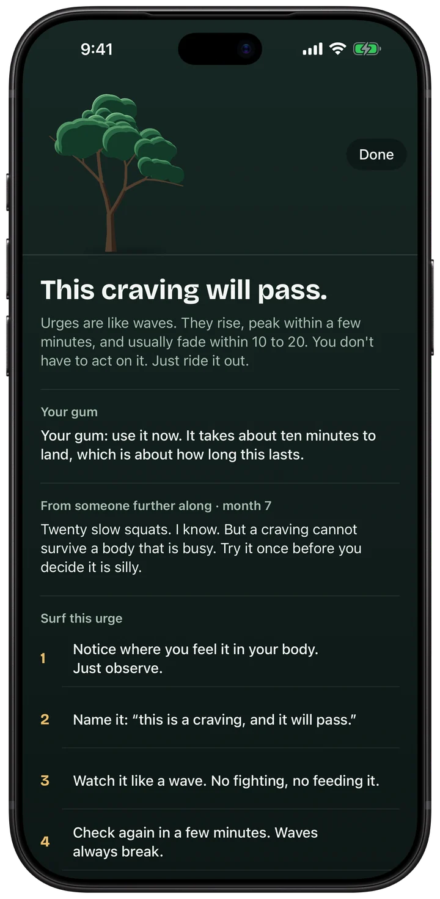
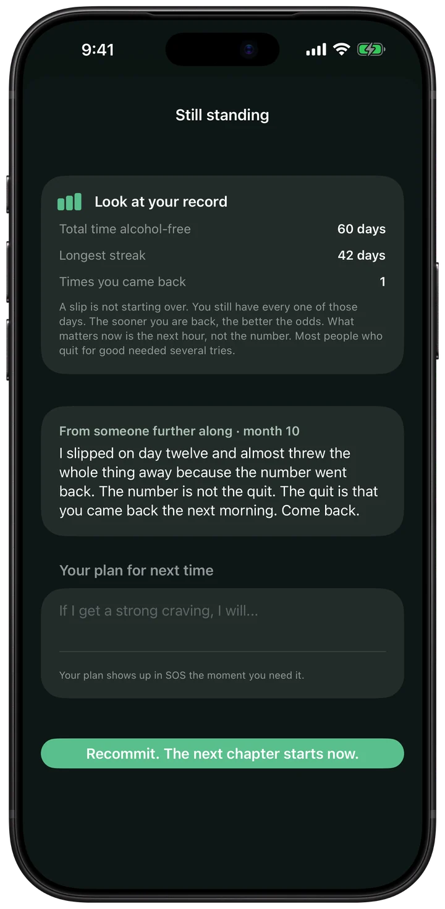
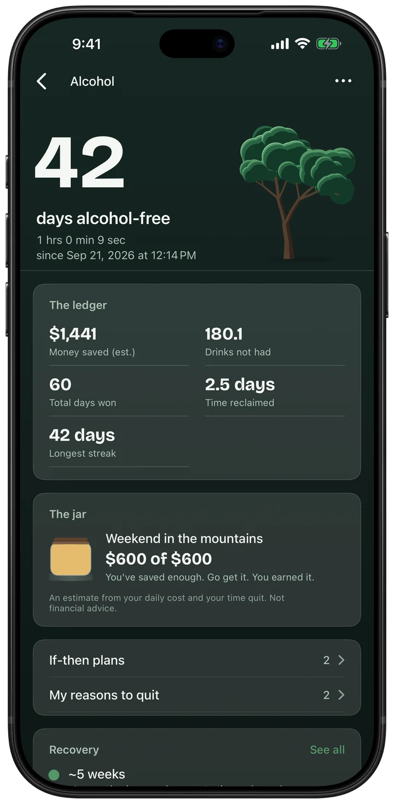

QuitKeep is an iPhone app for quitting vaping, smoking, nicotine pouches, alcohol, or any other habit. You pledge each morning, and a tree grows with every day you win.
It counts your days and the money you have kept, shows what is changing in your body, and gives you something to do the minute a craving hits. Everything stays on your iPhone. There is no account and no server, so nothing you write ever leaves your phone.

Help in the hard minutes
Breathe, move, ride the wave. Your gum first.

A slip is a chapter, not the end
Your days are never erased.

See what you keep
Money kept, days won, your whole record. On your iPhone only.
The details
Price
Free. Plus is optional: $29.99 a year after a free week, or $79.99 once (US prices).
Ads
None
Account
None. No sign-up, no server.
Privacy label
Data Not Collected
Works offline
Yes
Needs
An iPhone with iOS 17.0 or later. Optimized for iPhone Duo.
Checked against the App Store listing on November 10, 2026.
The research behind it
The if-then plans come from research on smokers. A 2019 review of 12 studies found that people who made a plan of the form "if this happens, I will do that" quit more often than people who did not: 10.7% against 4.9% on average (McWilliams and colleagues, Health Psychology). In QuitKeep you write your own, and the app shows each one the moment it applies.
The 15-minute timer is built on urge surfing. In a 2009 study of 123 student smokers, a short lesson in it did not make the urges weaker, but the students who got it smoked fewer cigarettes over the next week (Bowen and Marlatt, Psychology of Addictive Behaviors). So the timer asks how strong the craving is at the start and again at the end, and you see your own numbers.
Each milestone in the recovery timeline names where it comes from: the NHS, the CDC, the American Cancer Society and others.
These studies tested the techniques, not QuitKeep. QuitKeep is a tracker, not a treatment.
Support
Found a bug, or want something added? Email me at minieriapps+quitkeep@gmail.com. I make QuitKeep on my own and read every message. Give me a couple of days to reply.
If you're in crisis
988 Suicide & Crisis Lifeline: call or text 988 (US)
SAMHSA National Helpline: 1-800-662-HELP (4357)
National Problem Gambling Helpline: 1-800-GAMBLER
QuitKeep is a personal tracker, not a medical or crisis service.
Privacy Policy
Last updated: October 1, 2026
QuitKeep does not collect, transmit, sell, or share any of your data. There is no account, no login, and no server.
What we collect
Nothing. The app has no analytics, no ads, no third-party SDKs, and makes no network requests. Because there is no backend, your data physically cannot reach us.
Where your data lives
Only on your iPhone, in Apple's on-device database. Delete the app and the data goes with it. Use the built-in CSV/PDF export to keep your own copy.
Notifications
If enabled, reminders are scheduled locally on your device and are not sent through any server.
Face ID and the app lock
QuitKeep does not collect, access, store, or share face data. The optional app lock (in QuitKeep's Settings, off by default) uses Apple's LocalAuthentication framework: iOS performs the Face ID, Touch ID, or passcode check itself and tells QuitKeep only whether it succeeded. Your face data stays in your device's Secure Enclave under Apple's control; QuitKeep never receives it, so there is nothing for us to use, retain, disclose, or share with any third party. To withdraw permission, turn the lock off in QuitKeep's Settings, or switch off Face ID for QuitKeep in the iOS Settings app (Face ID & Passcode › Other Apps). Because QuitKeep holds no face data there is nothing for it to delete; your enrolled face is managed, and can be removed, only in iOS Settings › Face ID & Passcode.
Get Help resources
The in-app crisis lines are third-party services listed for convenience; calling connects you directly to them, not through QuitKeep.
In-app purchase
QuitKeep Plus is an optional purchase (a yearly subscription or a one-time unlock) handled entirely by Apple's App Store. QuitKeep never sees your payment details; Apple's own privacy policy applies to the transaction.
Children
QuitKeep does not knowingly collect information from anyone, including children.
QuitKeep is not a medical device and does not provide medical advice, diagnosis, or treatment. If you drink heavily or daily, talk to a doctor before stopping. Alcohol withdrawal can be dangerous.